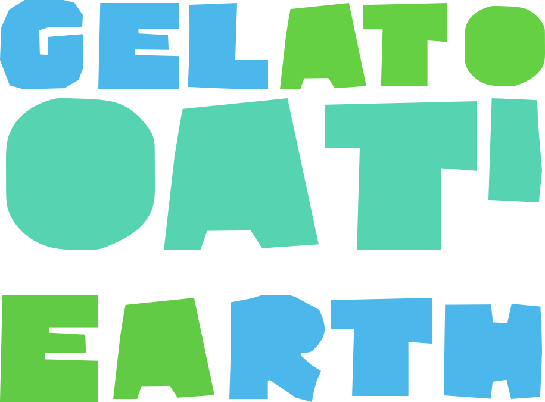
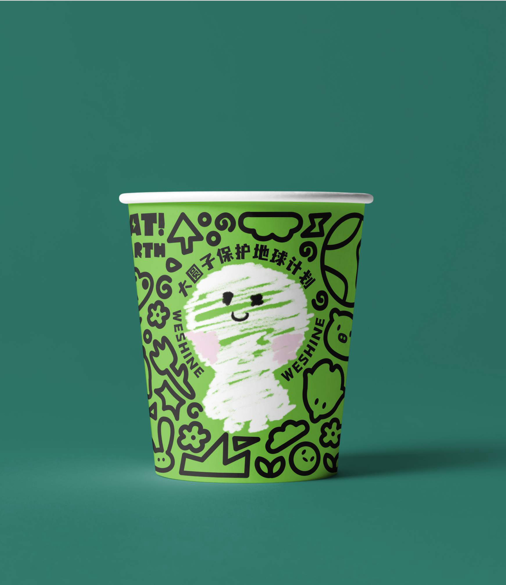
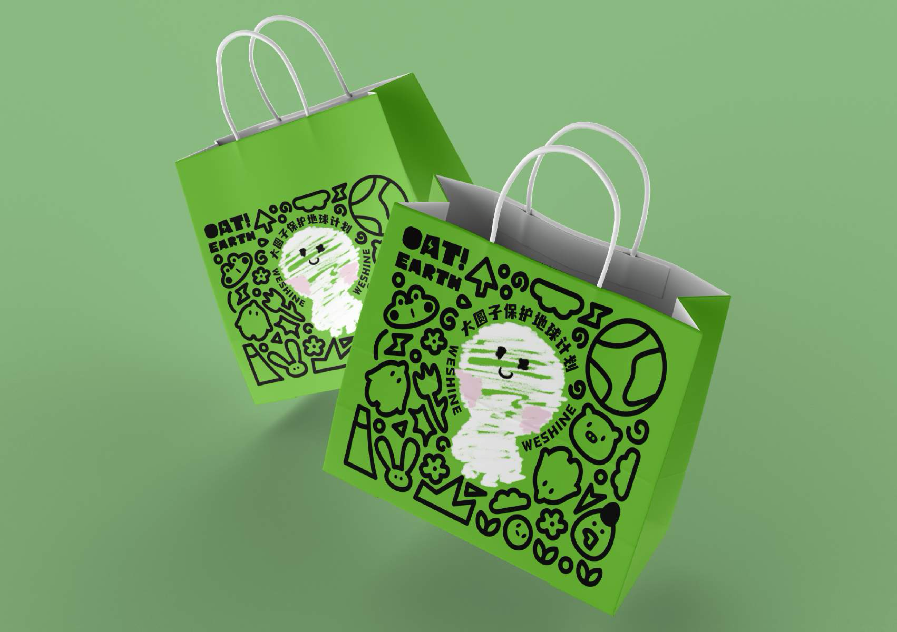
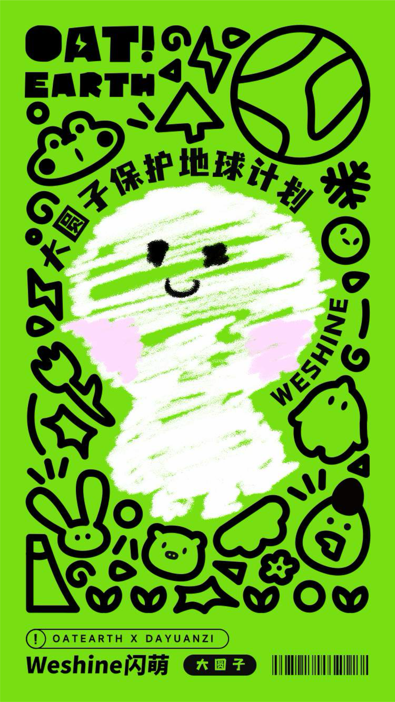

Selected Case / Campaign & Packaging
OATLY × 大圆子
保护地球计划
围绕「保护地球计划」主题，将大圆子角色与环保图形语言融入 OATLY 联名视觉。系列包含主题字标、插画包装及包装应用展示，以鲜明绿、蓝色调串联不同画面，传达轻松、活泼的环保倡议。




系列插画、主题图形与包装应用共同构成此次联名项目的视觉呈现。
围绕「保护地球计划」主题，将大圆子角色与环保图形语言融入 OATLY 联名视觉。系列包含主题字标、插画包装及包装应用展示，以鲜明绿、蓝色调串联不同画面，传达轻松、活泼的环保倡议。




系列插画、主题图形与包装应用共同构成此次联名项目的视觉呈现。